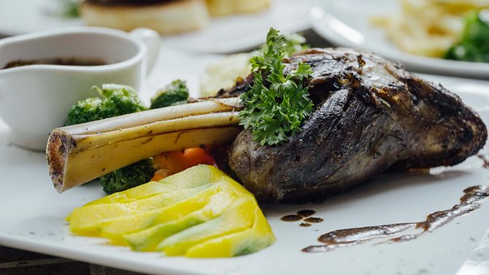

Et yemeği sevenlerin karşı koyamadığı bir lezzet, tas kebabı. Sebzelerin ve etin aynı tabakta buluştuğu bu yemek her lokmada ayrı sevdiriyor. Şimdiden kolay gelsin ve afiyet olsun...

Fırında kuzu incik
Malzemeler
- 2 adet kemikli orta boy kuzu incik
- 7 adet arpcık soğan
- 6 adet kuru mürdüm eriği
- 1 adet kahve fincanı içerisinde nar ekşisi
- 1 adet kahve fincanı zeytinyağı
- 2 yemek kaşığı tereyağı
- Bir miktar deniz tuzu
- Taze çekilmiş karabiber
- Tatlı toz kırmızı biber
Nasıl yapılır?
- Kuzu incik üzerine ise nar ekşisi, tuz, karabiber, kırmızı biber ve zeytinyağı dökülür. Bu soslar ile kuzu incikler iyice ovulur.
- Sonrasında ise mürdüm erikleri ve arpacık soğan da eklenir.
- Kuzu incik, mürdüm eriği ve arpacık soğan fırın poşetine konulur. Fırın poşetinin ağzı iyice düğümlenir. Kuzu incik olan fırın poşetinin üzerine minik delikler açılır.
- Bu kuzu incikler ise 200 derece ısıtılmış fırında yaklaşık 1 saat 15 dakika kadar pişirilmelidir.
İŞTE PÜF NOKTALAR!!!
- Kuzu incik pişerken suyunun içerisinde kalması ve fazla pişmemesi lazım. O nedenle kuzu incik fırında pişerken detaylı olarak kontrol edilmelidir.
AFİYET OLSUN